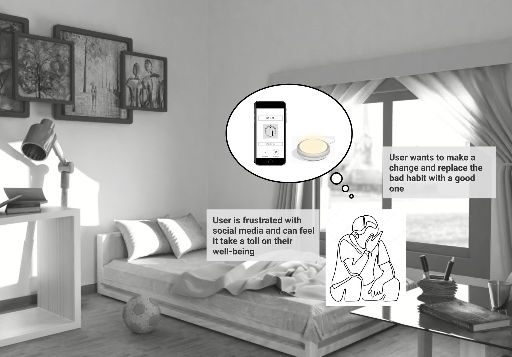

Designing for Low Self-Esteem


A master's thesis exploring how digital products shape the self-esteem of young women — and how intentional design might instead support it. The research was grounded in a four-week cultural probe study, and concluded with five speculative design proposals spanning apps, ambient objects, and lamp-as-interface concepts.

Low self-esteem in young women is rarely rooted in reality. It is rooted in comparison — and comparison has found a perfect engine in social media. Platforms like Instagram present curated images of others' lives as a standard to measure oneself against, one that is designed to be impossible to meet. This creates a feedback loop: the more time a user spends on a platform, the more inadequate they feel; the more inadequate they feel, the more they return, looking for validation.
As designers at the beginning of our careers, we wanted to understand whether design itself could be part of the solution. Our central research question was: how can we assist young women in practising self-appreciation through a digital artifact, and how can this improve their self-esteem and wellbeing over time?
The cultural probeTo research something as private as self-perception, we needed a method that gave participants the space to speak for themselves. We chose a cultural probe — a set of designed artefacts sent to participants to use over four weeks, returning data in the form of journals, photos, and reflections.
We named it internally The f**ck-low-self-esteem-I-am-awesome kit. The name was intentional: empowering, a little irreverent, and honest about what we were trying to do. The kit was designed not to feel clinical or therapeutic, but warm, playful, and worth engaging with daily.
Kit contents: [A] deck of cards · [B] jar of compliments · [C] mood journal · [D] stethoscope · [E] reflection journal · [F] pen · [H] blank cards · [I] egg timer
How the kit workedThe daily ritual was simple: score your mood and screen time, draw a card from the deck, do whatever the card prompted, then write about it in the reflection journal. The instruction was gentle — use it freely, adapt it to your needs, but try to do at least one thing for yourself each day.
The deck of cards was the heart of the kit. Cards were grouped around two principles: looking inward (mindfulness, peace of mind, self-reflection) and looking outward (finding comfort and recognition in people close to you). Card types included:
Use the stethoscope to listen to your heartbeat. Concentrate on the sound for 5 minutes.
Write a letter to your future self. Send it as a text with no restrictions except: be kind.
Grab a treat from the cookie jar [B] and read the compliment inside.
Write down three goals for today. At the end of the day, reflect on how you did.
The reflection journal included a guide of leading questions — not a form to fill in, but a gentle scaffold: Which task did you do? Were you able to focus? How do you feel now? Would you do it again? The mood journal tracked daily emotional state via drawn smileys alongside screen-time minutes, providing a parallel thread of quantitative data to read against the qualitative reflections.
Participants were also asked to complete two baseline questionnaires on day one: the Rosenberg Self-Esteem Scale and the Bergen Social Media Addiction Scale. These gave us a starting point against which to read the data that emerged across the four weeks.
What we learnedThe data that came back was rich and varied. Participants who engaged consistently with the reflection journal described feeling more aware of their own thought patterns — noticing, for the first time, how often their internal narrative was self-critical. Several described the act of writing as a form of release: something that moved a feeling from inside them to a page, where it could be examined more neutrally.
Screen time data and mood scores showed no simple correlation — but high screen-time days often came with notes of anxiety, scattered thinking, or disconnection. Several participants mentioned wanting to spend less time on their phones, but lacking a concrete signal to act on that wish. This became one of the most generative tensions the design proposals responded to.
Mindfulness tasks, paradoxically, were both the most difficult and the most valued. Participants who engaged with them reported feelings of calm and groundedness — but several wrote that they would not have done them without being prompted. The probe created permission to slow down in a way they didn't naturally grant themselves.
Design proposalsThe research produced seven design arguments — principles for how digital products might be built with ethical responsibility towards a user's emotional life. From these, five speculative design proposals were developed and documented in a Design Workbook.
What connects all three lamp proposals is a deliberate refusal to use the smartphone as the delivery mechanism. Notifications, reminders, and apps live in the same space as Instagram and TikTok — they compete for attention rather than offering relief from it. By placing the cue in the room rather than on the screen, these designs work through peripheral awareness: a warm light in the corner of your vision, asking nothing of you, but quietly reminding you that you are worth attending to.
DocumentsThe full research and design process is documented in two companion artefacts. The probe kit documentation covers the methodology, kit contents, and task rationale. The Design Workbook presents all five design proposals with annotated design arguments.
Probe Kit
↓ Download probe kit documentationDesign Workbook
↓ Download design workbook